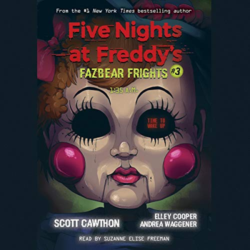

*To Be Beautiful* is the story of Sarah, a young girl who finds a doll named Eleanor. When Sarah wishes to be beautiful, Eleanor grants her wish, but with terrible consequences. The story explores themes of insecurity, superficiality, and the price of our desires.
